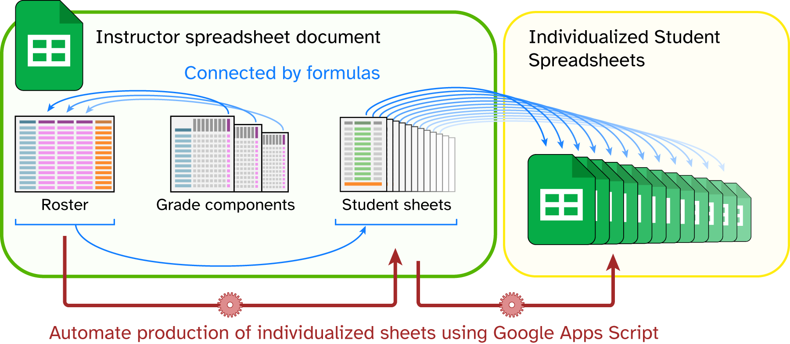
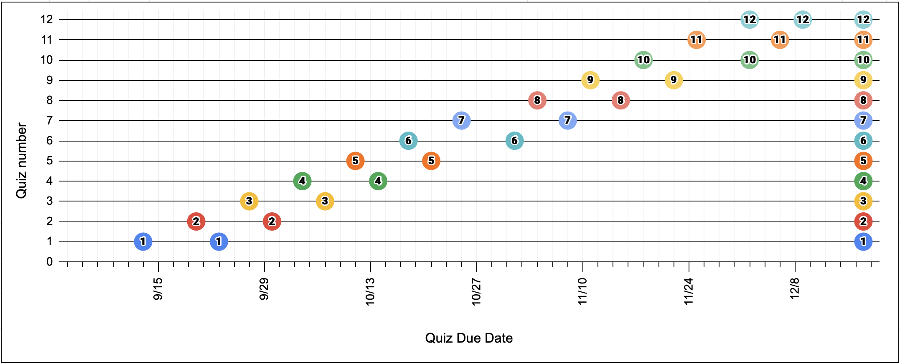
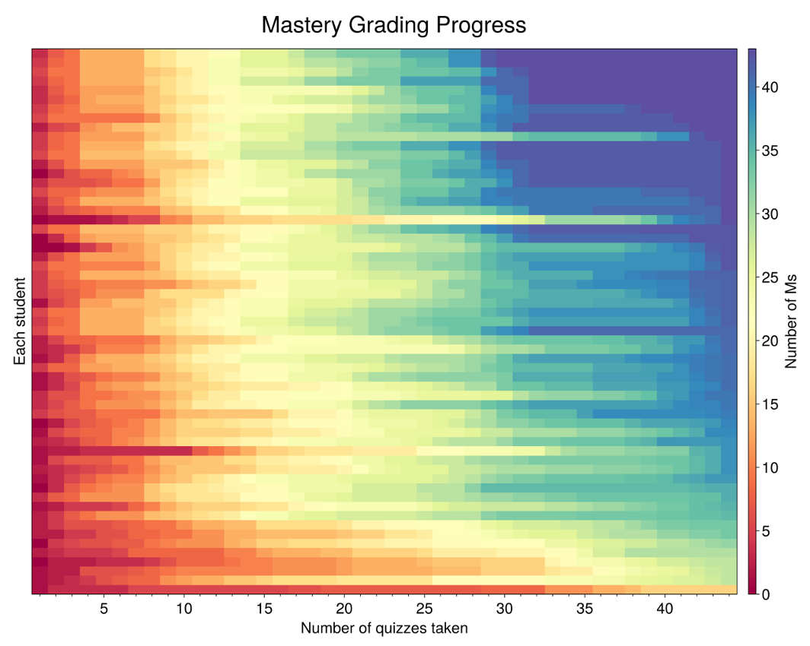

Alternative Grading Tools
A repository for teaching materials I use for classes with alternative grading. Even if they cannot be directly used in your teaching, I hope that they can provide inspiration or a starting point for your own alternative grading journey.
Please direct questions, concerns, or suggestions to Kyle Broaders (broaders@mtholyoke.edu).
Gradebooks
Below are example Google Sheets that I have used to implement mastery- and labor-based grade record-keeping and sharing. Suggestions for use are embedded in the Instructions sheet. Use them directly or as a starting point for building your own system.
An important caveat for the sharing features of these gradebooks is that they require your students to have Google accounts. For security reasons, I would only recommend sharing using this system if your campus has an instutitional Google Workspaces.
Mastery Grading Gradebook
This spreadsheet coordinates student information with their mastery grade progress. Making individual sheets for each student within the document gives an overview of each student and supports sharing with students via an IMPORTRANGE statement in a separate spreadsheet document. Instructions are in the first sheet. If you want to build your own, here is a mostly blank version with student sheets and example data deleted.
Labor-Based Grading

This spreadsheet coordinates student information with a labor-based flavor of contract grading. As above, it supports making a sheet for each student that gives an overview of their progress and supports sharing to a separate document via IMPORTRANGE. If you want to build your own version, here is a mostly blank version with student sheets and example data deleted.
Note: Hand-duplicating a copy of the Template sheet for each student is reasonable for small classes, but becomes onerous with larger classes. There is a script under Extensions → Apps Script that can duplicate within the instructor sheet as well as making the individual spreadsheets with the appropriate IMPORTRANGE() statement.
Warning! Exercise caution executing scripts! I recommend reading the script (also available on Github) to make sure you know what it does before running anything. For most users, the only functions to execute are makeStudentSheets() and makeIndividualSpreadsheets().
Other useful tools
Quiz timing plot
My class schedules are built using Google Sheets so that they can exist as a living document as the semester develops. My own template contains the schedule, a reminder of learning goals, and a plot of the timing of quizzes.

Class grades heatmap
I find it helpful for buy-in and class morale to tell the story of how grades have tended to develop in previous semesters. I use this notebook to generate heatmaps showing how grades build over time. Tallies M grades in a spreadsheet that shares formatting with the AllGrades sheet, and displays them as a heatmap. Made for Julia in a Pluto notebook and available along with instructions for use and example data on Github.
